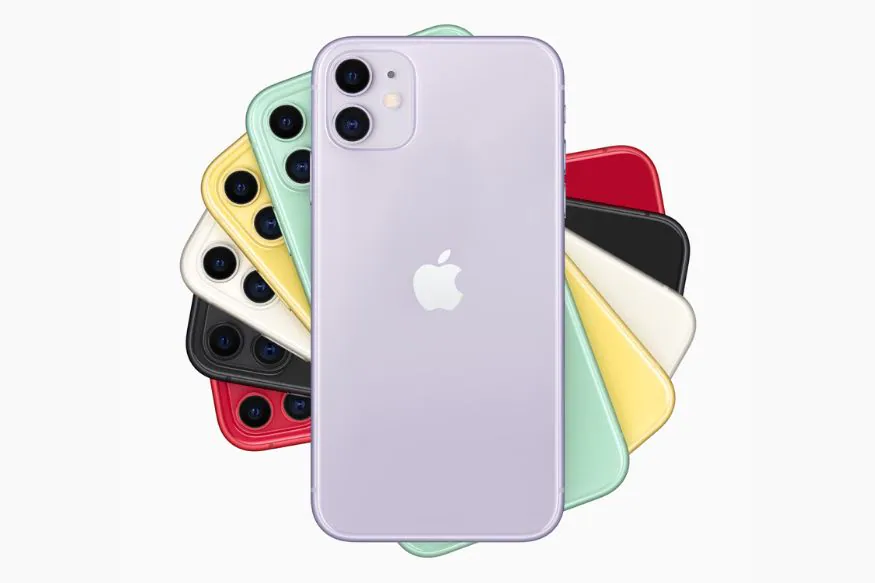
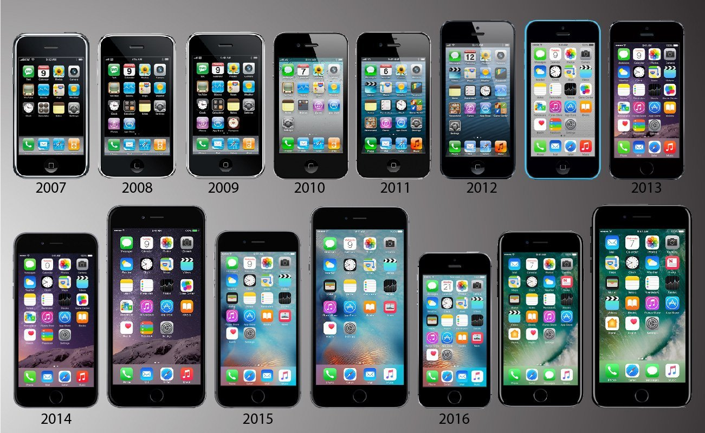

The iPhone is a line of smartphones designed and marketed by Apple Inc.
These devices use Apple's iOS mobile operating system. The first-generation
iPhone was announced by then-Apple CEO Steve Jobs on January 9, 2007. Since
then, Apple has annually released new iPhone models and iOS updates. As of
November 1, 2018, more than 2.2 billion iPhones had been sold. The iPhone has
a user interface built around a multi-touch screen. It connects to cellular networks
or Wi-Fi, and can make calls, browse the web, take pictures, play music and send
and receive emails and text messages. Since the iPhone's launch further features
have been added, including larger screen sizes, shooting video, waterproofing,
the ability to install third-party mobile apps through an app store, and many
accessibility features. Up to iPhone 8 and 8 Plus, iPhones used a layout with
a single button on the front panel that returns the user to the home screen.
Since iPhone X, iPhone models have switched to a nearly bezel-less front screen
design with app switching activated by gesture recognition.

